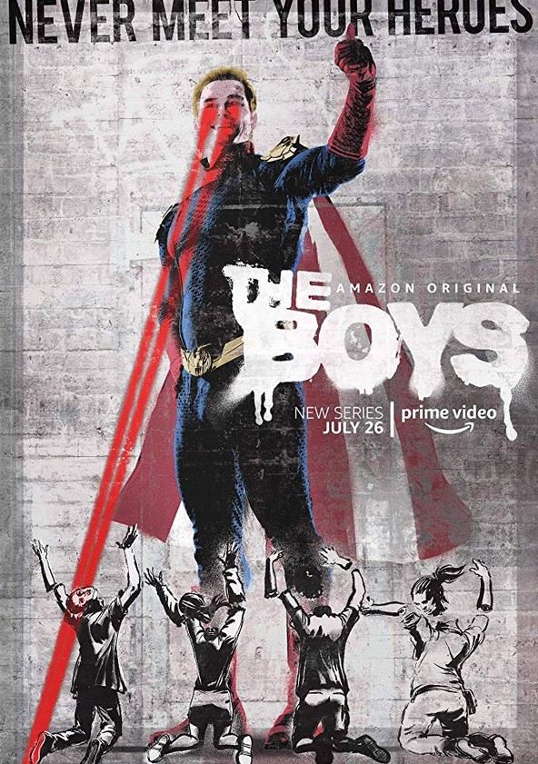
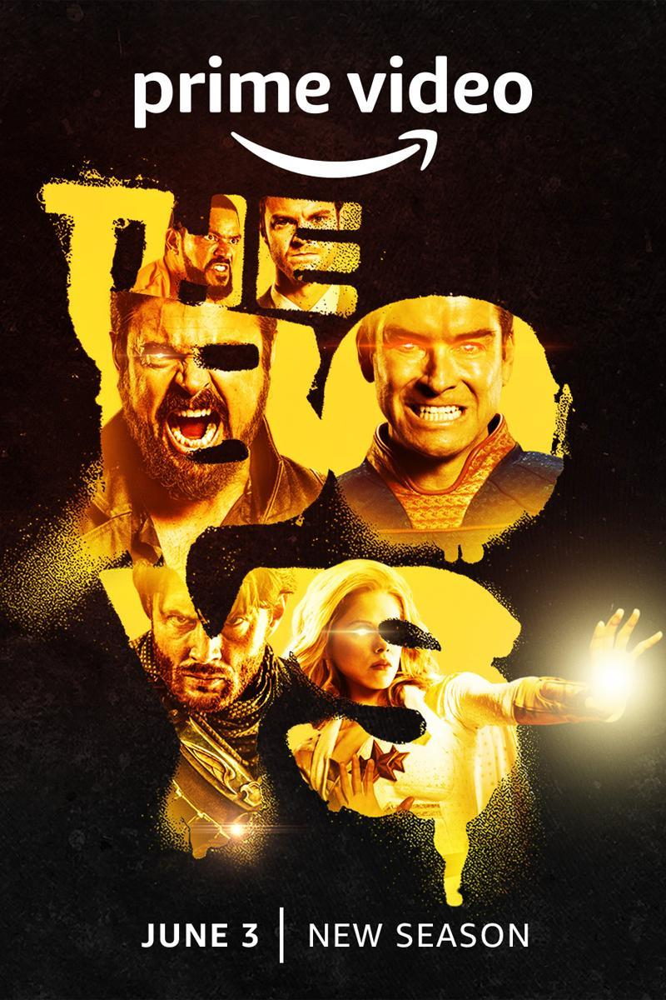

Primera Temporada
La primera temporada de The Boys se estrenó el día 26 de julio del 2019, con un total de 8 episodios disponibles en Amazon Prime Video.
La serie comienza cuando Hughie Campbell, un vendedor de Audio y Video, ve morir a su novia Robin, debido a un Audaz, un Súper, que se da a la fuga. Luego del suceso, Hughie ve como Audaz "lamenta" lo sucedido con Robin de manera publica en las noticias, cuando un agente de Vought Internacional ofrece la suma de $ 45,000 si firma un acuerdo de confidencialidad. Campbell pide tiempo para pensar y esto lo lleva a conocer a Billy Butcher, un supuesto agente del FBI que le muestra a Hughie el comportamiento corrupto de los héroes.
Mientras tanto, una chica de Iowa, Annie January, conocida como Estrella, se presenta en una audicion de Vought para poder ingresar al equipo de superhéroes de Los Siete, demostrando que tiene poderes de Conversión Eléctrica. Ella finalmente logra ingresar en el equipo, un sueño que tenía desde niña, pero que la hace ver la verdadera cara de aquellos que admiraba. En el desarrollo de la temporada, la investigacion y los incidentes en los que se involucra provocan que Hughie se una a Los Muchachos un grupo con los que descubrirá que no solo tendrán que enfrentarse a una organización extraña y súperpersonas, sino a toda una conspiracion secreta.

Segunda Temporada
La segunda temporada de The Boys se estrenó el día 4 de septiembre del 2020, con un total de 8 episodios disponibles en Amazon Prime Video. El arco ve a un Vengador cada vez más psicótico, aumentando su autoridad sobre Vought y la nueva vida de supervivencia de Los Muchachos.
La serie se renovó oficialmente para una segunda temporada el 19 de julio de 2019, justo antes del estreno de la primera temporada. Se rodó entre junio y noviembre de 2019 y primeros tres episodios de la temporada se emitieron el día del estreno.
Ha pasado un tiempo desde los eventos de la primera temporada y Hughie, Leche Materna, Frenchie y Kimiko intentan adaptarse a la clandestinidad sin rastro de Billy, mientras son criminales buscados por el gobierno de los Estados Unidos y Vought, que esta cada vez más controlado por Vengador. Estrella sigue en su puesto de superheroína, cuando llega la nueva integrante de Los Siete, Torrencial, que planea cambiar todo a su favor.

Tercera Temporada
La tercera temporada de la serie de televisión web estadounidense de superhéroes The Boys, se estrenó el 3 de junio de 2022 y finalizó el 8 de julio de 2022 a través de Amazon Prime Video y consiste de 8 episodios.
Teniendo lugar un año después de los eventos de la temporada anterior, la historia sigue al grupo The Boys que ahora trabajan para la Oficina de Asuntos de Superhéroes de Victoria Neuman para detener a los Súpers problemáticos, después de haber estado en paz con los Siete.
Sin embargo, el conflicto se reanuda una vez que Butcher comienza a investigar la verdad sobre la aparente muerte de Soldier Boy, uno de los primeros superhéroes estadounidenses de Vought, con la esperanza de matar a Homelander para siempre. Mientras tanto, la estabilidad mental de Homelander comienza a deteriorarse cuando Vought intenta restringir su poder, al mismo tiempo que Starlight y Queen Maeve ayudan a The Boys en sus planes contra él.